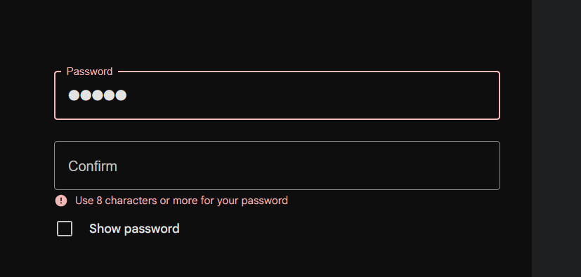

9. Pomoc użytkownikom w rozpoznawaniu, diagnozowaniu i usuwaniu błędów
EN: Help users recognize, diagnose, and recover from errors. Error messages should be expressed in plain language (no codes), precisely indicate the problem, and constructively suggest a solution.
PL: Pomagaj użytkownikom rozpoznawać, diagnozować i naprawiać błędy. Komunikaty o błędach powinny być jasne (bez kodów), precyzyjnie opisywać problem i podpowiadać konkretne rozwiązanie.
Przykład 1: Walidacja formularza

Uzasadnienie: Zamiast ogólnego "Błąd", system wskazuje konkretne pole i podpowiada, że hasło musi mieć co najmniej 8 znaków.
Przykład 2: Strona 404
Uzasadnienie: Dobrze zaprojektowana strona błędu wyjaśnia, co się stało, i oferuje linki powrotne, zamiast zostawiać użytkownika z pustym ekranem.